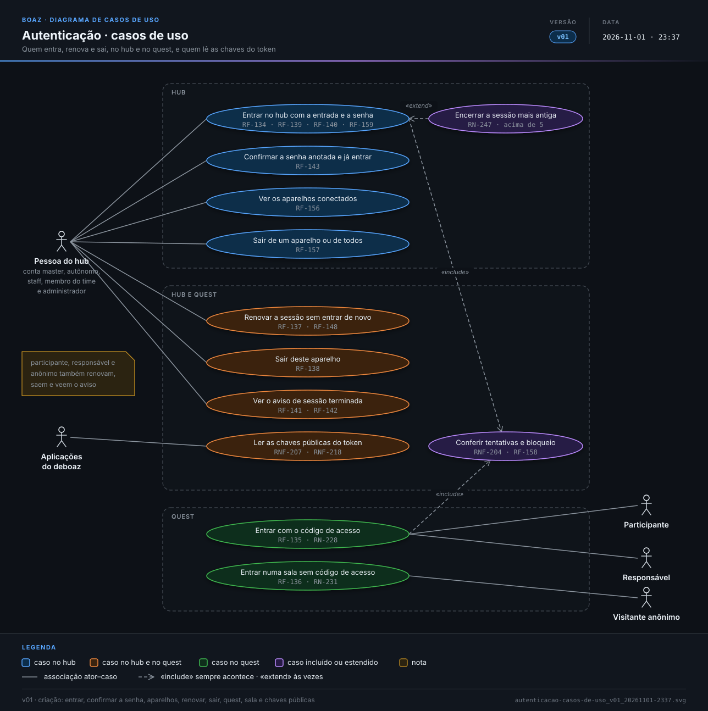
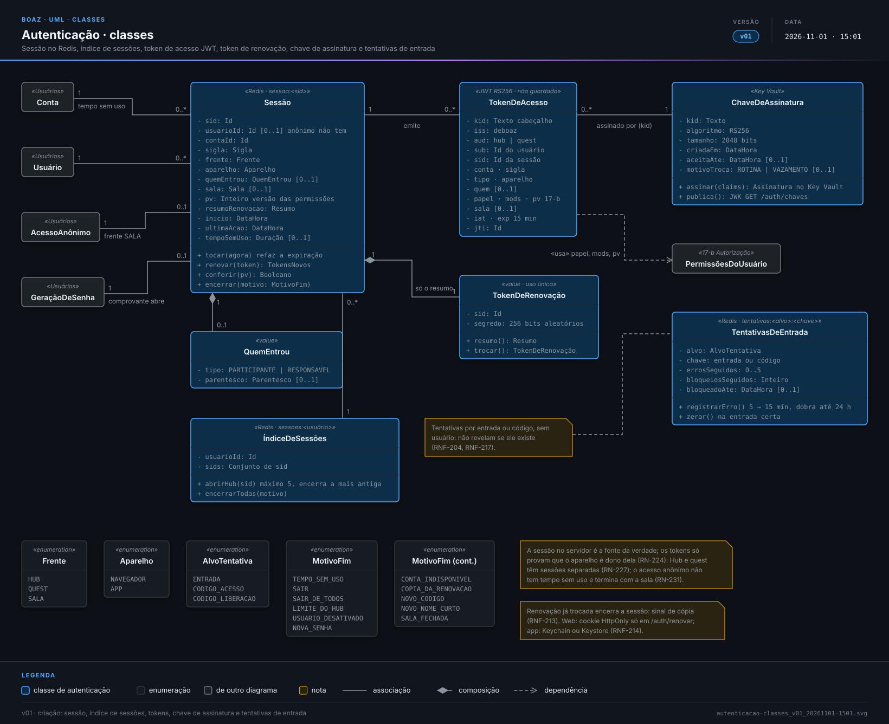
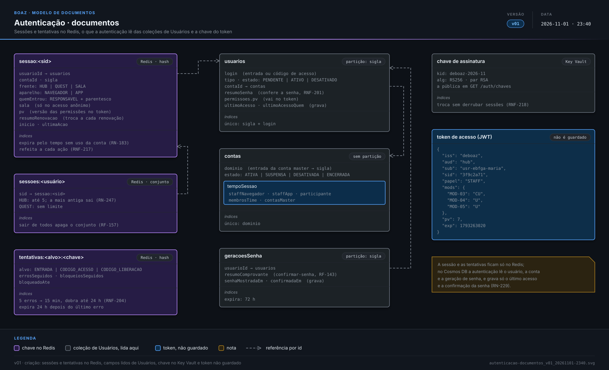

RF-134 Entrar no hub
Cenário: staff entra Dado a staff Maria Souza, ativa, da escola de sigla "EBFGA", ativa Quando informa "maria.ebfga@deboaz.com" e a senha dela em Entrar Então entra no hub e vê Módulos
boaz · Funcionalidade
Objetivodefinir como cada pessoa prova quem é no hub e no quest, que sessão e que tokens recebe, quanto tempo valem e quando deixam de valer.
RF-134 Entrar no hubCenário: staff entra Dado a staff Maria Souza, ativa, da escola de sigla "EBFGA", ativa Quando informa "maria.ebfga@deboaz.com" e a senha dela em Entrar Então entra no hub e vê Módulos
RF-135 Entrar no questCenário: a mãe entra com o código do filho Dado o participante Lucas Andrade com o código "EBFGA-LUCAS-0412" Quando a mãe, Carla Andrade, informa o código e escolhe que é ela quem está entrando Então o perfil do Lucas abre no quest
RF-137 RenovaçãoCenário: token de acesso vence durante o uso Dado a Maria no hub há 20 min Quando ela abre outro módulo Então o módulo abre sem pedir a senha Cenário: tempo sem uso passou Dado a Maria sem usar o hub no navegador há 9 h, com o tempo de 8 h da escola Quando ela volta a usar o hub Então vai para Entrar com o aviso "Sua sessão terminou. Entre de novo."
RF-138 SairCenário: sair no computador da escola Dado a Maria conectada no navegador e no app Quando toca em "Sair" no navegador Então o navegador volta para Entrar E o app continua conectado
RF-139 Entrada erradaCenário: senha errada Quando alguém informa "maria.ebfga@deboaz.com" e uma senha errada Então vê "Entrada ou senha incorretas." Cenário: entrada que não existe Quando alguém informa "zeca.ebfga@deboaz.com", que não existe, e uma senha Então vê a mesma mensagem "Entrada ou senha incorretas."
RF-140 Acesso indisponívelCenário: conta suspensa Dado a escola de sigla "EBFGA" suspensa pelo time deboaz Quando a Maria informa a entrada e a senha certas Então vê "Acesso indisponível. Fale com quem administra a sua conta."
RF-158 Entrada bloqueadaCenário: quinta senha errada Dado 4 senhas erradas seguidas para "maria.ebfga@deboaz.com" Quando alguém erra a senha pela quinta vez às 09:00 Então vê "Muitas tentativas erradas. Tente de novo às 09:15." E Entrar fica desligado até as 09:15
RF-159 Entrada concluídaCenário: hub Quando a Maria entra no hub com a senha certa Então vê Módulos com o aviso flutuante "Você entrou. Que bom te ver de novo!" E o selo de volta animado Cenário: quest Quando o Lucas entra com o código e escolhe o perfil dele Então vê Tarefas com o aviso "Você entrou no perfil do Lucas." Cenário: anônimo Quando alguém entra na sala com o código da sala Então vê a sala com o aviso "Você entrou na sala como PUPIL-EBFGA-13465."
RF-141 Encerrar em todos os aparelhosCenário: staff desativado Dado a Maria conectada no navegador e no app Quando a conta master desativa a Maria Então na próxima ação, em cada aparelho, ela vai para Entrar
RF-142 Sessão terminadaCenário: aviso ao voltar Dado o Lucas sem abrir o quest há 31 dias, com o tempo de 30 dias da escola Quando ele abre o quest Então vê o acesso com o aviso "Sua sessão terminou. Entre de novo."
RF-143 Primeiro acessoCenário: senha anotada Dado a Maria vendo uma única vez a senha gerada no primeiro acesso Quando marca "Anotei a senha" e toca em "Continuar" Então entra no hub sem digitar a senha
RF-156 Aparelhos conectadosCenário: navegador e app Dado a Maria conectada no navegador da escola e no app do celular Quando abre Conta no navegador Então vê os dois aparelhos com a hora da última ação E o navegador marcado como "Este aparelho"
RF-157 Sair dos aparelhosCenário: esqueceu o computador da escola aberto Dado a Maria conectada no navegador da escola e no app Quando, no app, escolhe o navegador em Conta e toca em "Sair deste aparelho" Então na próxima ação no navegador aparece Entrar E o app continua conectado Cenário: sair de todos Quando a Maria toca em "Sair de todos os aparelhos" Então o navegador e o app vão para Entrar
RN-227 Hub e quest separadosCenário: landing page sem sessão Quando alguém abre a landing page Então nenhuma sessão é aberta
RN-247 Limite de sessõesCenário: sexta sessão do hub Dado a Maria com 5 sessões do hub abertas Quando ela entra num sexto aparelho Então o aparelho de última ação mais antiga vai para Entrar E mostra o aviso "Sua sessão terminou. Entre de novo."
RN-250 Aviso de cada tentativaEsquema do Cenário: tipo do aviso
Quando a tentativa de entrar termina em <resultado>
Então aparece o aviso de ação <tipo>, com o selo animado
Exemplos:
| resultado | tipo |
| sessão aberta | concluído |
| senha ou código incorreto | recusado |
| conta ou usuário indisponível | indisponível |
| entrada bloqueada | espera |
| sessão terminada | indisponível, flutuante sobre a tela de entrada |
RNF-214 Onde ficam os tokensEsquema do Cenário: guarda no aparelho
Quando a Maria entra pelo <aparelho>
Então o token de acesso fica só na memória
E o token de renovação fica <onde>
Exemplos:
| aparelho | onde |
| navegador | cookie HttpOnly, Secure, SameSite=Strict, só na renovação |
| app no iOS | Keychain |
| app no Android | Keystore |
RNF-216 Conferência em cada pedidoCenário: renova antes de levar a Entrar Dado a Maria no hub com o token de acesso vencido Quando um pedido do hub recebe 401 Então o hub tenta uma renovação antes de levar a Entrar E se a renovação também for recusada, vai para Entrar com o aviso de sessão terminada
Esquema do Cenário: um endereço de entrada por frente
Quando <quem> envia POST <endereço> com <credencial>
Então a resposta é 200 com tokenAcesso, tipo "Bearer" e expiraEm 900
Exemplos:
| quem | endereço | credencial |
| conta master, educador, staff | /auth/hub/entrar | entrada, senha e aparelho |
| membro do time deboaz | /auth/hub/entrar | entrada, senha e aparelho |
| participante ou responsável | /auth/quest/entrar | código, aparelho e quem |
| pessoa sem código de acesso | /auth/sala/entrar | código da sala |
RF-134 Entrar no hubCenário: staff entra pelo navegador
Dado a staff "maria.ebfga@deboaz.com", ativa, da escola "EBFGA", ativa
Quando envia POST /auth/hub/entrar com:
"""
{
"entrada": "maria.ebfga@deboaz.com",
"senha": "••••••••",
"aparelho": "NAVEGADOR"
}
"""
Então a resposta é 200 com tokenAcesso, tipo "Bearer" e expiraEm 900
E vem o cookie deboaz_renovacao, HttpOnly, Secure e SameSite=Strict, só para /auth/renovar
Cenário: staff entra pelo app
Quando envia o mesmo pedido com o aparelho "APP"
Então a resposta é 200 com o tokenRenovacao no corpo, sem cookie
RF-135 Entrar no questCenário: a mãe entra com o código do filho
Quando envia POST /auth/quest/entrar com:
"""
{
"codigo": "EBFGA-LUCAS-0412",
"aparelho": "APP",
"quem": {
"tipo": "RESPONSAVEL",
"parentesco": "Mãe"
}
}
"""
Então a resposta é 200 com o token de acesso do Lucas
E o token traz em quem o tipo "RESPONSAVEL" e o parentesco "Mãe"
RF-136 Sala anônimaCenário: entra e a sala fecha Quando envia POST /auth/sala/entrar com a sala "482107", aberta Então a resposta é 200 com um token de papel "ANONIMO", só com o módulo e o id da sala E quando o professor fecha a sala, esse token recebe 401 em qualquer pedido Cenário: sala fechada Quando envia POST /auth/sala/entrar com uma sala fechada ou inexistente Então a resposta é 404 SALA_FECHADA
RF-137 RenovaçãoCenário: renovação no navegador
Dado a sessão 3f9c2a71 da Maria ativa e o cookie deboaz_renovacao dela
Quando envia POST /auth/renovar com o cookie
Então a resposta é 200 com um tokenAcesso novo e um cookie de renovação novo
Cenário: renovação no app
Quando envia POST /auth/renovar com:
"""
{
"tokenRenovacao": "3f9c2a71.Qm9h…"
}
"""
Então a resposta é 200 com tokenAcesso e tokenRenovacao novos
Cenário: tempo sem uso passou
Dado a sessão da Maria sem pedidos há 9 h, com o tempo de 8 h da escola
Quando envia POST /auth/renovar
Então a resposta é 401 SESSAO_TERMINADA com "Sua sessão terminou. Entre de novo."
RF-138 SairCenário: sair do navegador Dado a Maria com sessões no navegador e no app Quando envia POST /auth/sair com o token do navegador Então a resposta é 204 e o cookie de renovação é apagado E o token do navegador recebe 401 no próximo pedido, e o do app continua valendo
RF-139 Entrada erradaEsquema do Cenário: mesma resposta para senha errada e entrada inexistente
Quando envia POST /auth/hub/entrar com a entrada <entrada> e <senha>
Então a resposta é 401 ENTRADA_INVALIDA com "Entrada ou senha incorretas."
E uma tentativa errada é contada para <entrada>
Exemplos:
| entrada | senha |
| "maria.ebfga@deboaz.com" | uma senha errada |
| "zeca.ebfga@deboaz.com" | qualquer senha |
RF-140 Acesso indisponívelEsquema do Cenário: conta ou usuário fora de uso
Dado <situação>
Quando a Maria envia POST /auth/hub/entrar com a entrada e a senha certas
Então a resposta é 403 ACESSO_INDISPONIVEL e nenhuma sessão é aberta
Exemplos:
| situação |
| a escola "EBFGA" suspensa |
| a Maria desativada |
RF-158 Entrada bloqueadaCenário: quinta senha errada
Dado 4 senhas erradas seguidas para "maria.ebfga@deboaz.com"
Quando a quinta senha errada chega às 09:00
Então a resposta é 429 ENTRADA_BLOQUEADA com:
"""
{
"tentarEm": "2026-11-01T09:15:00Z"
}
"""
E até as 09:15 a senha certa também recebe 429
RF-141 Encerrar em todos os aparelhosCenário: staff desativado Dado a Maria com sessões no navegador e no app Quando a conta master envia POST /usuarios/usr-ebfga-maria/desativar Então os tokens das duas sessões recebem 401 no próximo pedido E POST /auth/renovar de cada aparelho recebe 401 SESSAO_TERMINADA
RF-143 Primeiro acessoCenário: comprovante da senha anotada
Dado o comprovante "c7e1…" recebido junto com a senha gerada
Quando envia POST /auth/hub/confirmar-senha com:
"""
{
"comprovante": "c7e1…"
}
"""
Então a resposta é 200 com o token de acesso e a renovação
E o mesmo comprovante, enviado de novo, recebe 401 COMPROVANTE_INVALIDO
RF-156 Aparelhos conectadosCenário: lista das sessões
Dado a Maria com sessões no navegador e no app
Quando envia GET /auth/sessoes com o token do navegador
Então a resposta é 200 com:
"""
[
{
"sid": "3f9c2a71",
"aparelho": "NAVEGADOR",
"ultimaAcao": "2026-11-01T09:42:00Z",
"esteAparelho": true
},
{
"sid": "7d20b9e4",
"aparelho": "APP",
"ultimaAcao": "2026-11-01T08:10:00Z",
"esteAparelho": false
}
]
"""
RF-157 Sair dos aparelhosCenário: sair de um aparelho
Quando a Maria envia DELETE /auth/sessoes/3f9c2a71 com o token do app
Então a resposta é 204
E o token do navegador recebe 401 no próximo pedido, e o do app continua valendo
Cenário: sessão de outra pessoa
Quando a Maria envia DELETE /auth/sessoes/{sid} com o sid de uma sessão do João
Então a resposta é 404 SESSAO_NAO_ENCONTRADA
Cenário: sair de todos
Quando a Maria envia DELETE /auth/sessoes
Então a resposta é 204
E os tokens e as renovações de todas as sessões dela recebem 401
RN-224 Sessão no servidorCenário: a sessão vale mais que o token Dado um token de acesso da Maria emitido há 5 min E a sessão desse token encerrada no servidor Quando envia qualquer pedido com esse token Então a resposta é 401
RN-225 Uma sessão por aparelhoCenário: navegador e app Dado a Maria com uma sessão no navegador Quando envia POST /auth/hub/entrar com o aparelho "APP" Então GET /auth/sessoes lista duas sessões, uma por aparelho E cada sessão guarda a conta, a frente, o aparelho, quem entrou, o pv e a última ação
RN-226 Tempo de sessãoEsquema do Cenário: tempo sem uso de cada pessoa
Dado <quem> com uma sessão no <aparelho>
Quando passa sem pedidos mais que o tempo <tempo>
Então o próximo pedido recebe 401 e POST /auth/renovar recebe 401 SESSAO_TERMINADA
Exemplos:
| quem | aparelho | tempo |
| staff | navegador | do staff no navegador |
| staff | app | do staff no app |
| participante | app | do participante |
| conta master | navegador | das contas master |
| membro do time | navegador | dos membros do time |
Cenário: cada pedido conta como uso
Dado a Maria no navegador, com o tempo de 8 h da escola
Quando ela faz um pedido a cada 7 h
Então a sessão continua e POST /auth/renovar recebe 200
RN-227 Hub e quest separadosEsquema do Cenário: token da outra frente
Dado um token de acesso de aud "<aud>"
Quando é usado num endereço do <frente>
Então a resposta é 401
Exemplos:
| aud | frente |
| hub | quest |
| quest | hub |
RN-228 ResponsávelCenário: a mãe entra como o filho Quando a Carla envia POST /auth/quest/entrar com o código do Lucas e o parentesco "Mãe" Então o token tem o sub "usr-ebfga-lucas" e, em quem, o responsável e o parentesco "Mãe" E ela faz pela API o que o Lucas faz, menos o que cada módulo restringir ao responsável
RN-229 TokensCenário: tokens da sessão Quando a Maria envia POST /auth/hub/entrar Então recebe um token de acesso com expiraEm 900, que não fica guardado no servidor E um token de renovação de uso único, que vale enquanto a sessão estiver ativa
RN-230 O que encerra a sessãoCenário: desativar encerra Dado a Maria com uma sessão no navegador Quando a conta master envia POST /usuarios/usr-ebfga-maria/desativar Então POST /auth/renovar da Maria recebe 401 SESSAO_TERMINADA Cenário: mudar permissão não encerra Dado a Maria com uma sessão no navegador Quando a conta master envia PUT /usuarios/usr-ebfga-maria/permissoes Então o token antigo recebe 401 PERMISSOES_DESATUALIZADAS E POST /auth/renovar da Maria recebe 200 com um token de pv novo
RN-231 Sessão anônimaCenário: sala aberta sem tempo sem uso Dado um token de papel "ANONIMO" da sala 482107 Quando passa 2 h sem pedidos, com a sala aberta Então os pedidos à sala continuam com 200 E os pedidos a perfil, tarefa ou outra sala recebem 403
RN-247 Limite de sessõesCenário: sexta sessão do hub Dado a Maria com 5 sessões do hub abertas Quando envia POST /auth/hub/entrar de um sexto aparelho Então a resposta é 200 e a sessão de última ação mais antiga termina E POST /auth/renovar daquela sessão recebe 401 SESSAO_TERMINADA Cenário: quest sem limite Dado o código do Lucas usado em POST /auth/quest/entrar de 6 aparelhos Então as 6 sessões continuam e cada POST /auth/renovar recebe 200
RNF-207 Token assinadoCenário: assinatura RS256 Quando a Maria envia POST /auth/hub/entrar Então o token de acesso é um JWT assinado com RS256, com o kid no cabeçalho E a chave RSA de 2048 bits que assina nunca sai do Key Vault E GET /auth/chaves devolve a chave pública desse kid, sem autenticação
RNF-209 Validade do tokenCenário: renovação dentro do tempo da sessão Dado a Maria no hub, com o tempo de 8 h da escola Quando o token de acesso dela passa de 15 min Então POST /auth/renovar devolve um token novo E a renovação funciona enquanto ela não passar 8 h sem pedidos
RNF-203 Credencial antigaEsquema do Cenário: mudança que invalida o token
Dado a Maria com sessões no navegador e no app
Quando <mudança>
Então o token emitido antes recebe 401 no próximo pedido, nos dois aparelhos
Exemplos:
| mudança |
| a conta master desativa a Maria |
| o time deboaz suspende a escola |
| a conta master pede uma nova geração de senha |
| a conta master muda as permissões dela |
| a escola descontrata um módulo que ela usa |
RNF-204 Bloqueio por tentativasEsquema do Cenário: tempo do bloqueio
Dado <bloqueios> bloqueios seguidos para "maria.ebfga@deboaz.com"
Quando a quinta senha errada seguida chega a POST /auth/hub/entrar
Então a resposta é 429 ENTRADA_BLOQUEADA, com tentarEm daqui a <tempo>
Exemplos:
| bloqueios | tempo |
| 0 | 15 min |
| 1 | 30 min |
| 2 | 1 h |
| 7 | 24 h |
Cenário: código de acesso também bloqueia
Quando o código "EBFGA-LUCAS-0412" chega errado 5 vezes seguidas a POST /auth/quest/entrar
Então a resposta é 429 ENTRADA_BLOQUEADA, com tentarEm daqui a 15 min
RNF-213 Token de renovaçãoCenário: troca a cada uso Dado a Maria com o token de renovação "3f9c2a71.A" Quando envia POST /auth/renovar com "3f9c2a71.A" Então recebe "3f9c2a71.B", o id da sessão seguido de 256 bits aleatórios E "3f9c2a71.A" deixa de valer E a sessão guarda só o resumo irreversível do token novo Cenário: renovação copiada Dado o token de renovação "3f9c2a71.A" já trocado por "3f9c2a71.B" Quando alguém envia POST /auth/renovar com "3f9c2a71.A" Então a resposta é 401 SESSAO_TERMINADA e a sessão 3f9c2a71 termina
RNF-215 Identidade no tokenCenário: token da Maria no navegador
Quando a Maria envia POST /auth/hub/entrar com o aparelho "NAVEGADOR"
Então o token de acesso traz esta identidade, sem nome, documento, matrícula nem senha:
"""
{
"alg": "RS256",
"typ": "JWT",
"kid": "deboaz-2026-11"
}
{
"iss": "deboaz",
"aud": "hub",
"sub": "usr-ebfga-maria",
"sid": "3f9c2a71",
"conta": "conta-ebfga",
"sigla": "EBFGA",
"tipo": "STAFF",
"aparelho": "NAVEGADOR",
"iat": 1793262120,
"exp": 1793263020,
"jti": "a81c0e5d",
"papel": "STAFF",
"mods": {
"MOD-03": "CU",
"MOD-04": "U",
"MOD-05": "U"
},
"pv": 7
}
"""
E papel, mods e pv são os da autorização
Cenário: quem entrou no quest
Quando a Carla envia POST /auth/quest/entrar com o código do Lucas, como mãe
Então o token traz em quem o responsável e o parentesco "Mãe"
RNF-216 Conferência em cada pedidoEsquema do Cenário: token recusado
Dado a Maria com um token <problema>
Quando envia um pedido com esse token
Então a resposta é 401
Exemplos:
| problema |
| com a assinatura errada |
| vencido |
| do quest |
| de uma sessão encerrada |
| com a versão de permissões antiga |
RNF-217 Sessão no RedisCenário: sessão da Maria
Quando a Maria entra no hub pelo navegador, com o tempo de 8 h da escola
Então a sessão fica no Redis na chave sessao:3f9c2a71, expirando em 8 h e refeita a cada pedido:
"""
{
"usuarioId": "usr-ebfga-maria",
"contaId": "conta-ebfga",
"sigla": "EBFGA",
"frente": "HUB",
"aparelho": "NAVEGADOR",
"quemEntrou": null,
"versaoPermissoes": 7,
"resumoRenovacao": "(resumo irreversível do token de renovação)",
"criadaEm": "2026-11-01T09:00:00Z",
"ultimaAcao": "2026-11-01T09:42:00Z"
}
"""
E o índice sessoes:usr-ebfga-maria lista as sessões dela, para encerrar todas de uma vez
Cenário: tentativas erradas
Quando alguém erra a senha de "maria.ebfga@deboaz.com"
Então a tentativa e o bloqueio ficam no Redis, com expiração igual ao tempo do bloqueio
RNF-218 Troca da chaveCenário: troca a cada 90 dias Dado tokens assinados com a chave "deboaz-2026-11" Quando a chave é trocada por "deboaz-2027-02" depois de 90 dias Então os tokens novos levam o kid "deboaz-2027-02" e GET /auth/chaves traz as duas E os assinados com "deboaz-2026-11" continuam aceitos até vencer, sem encerrar sessões Cenário: troca por vazamento Dado a suspeita de vazamento da chave "deboaz-2026-11" Quando a chave é trocada na hora Então os tokens assinados com "deboaz-2026-11" recebem 401 E POST /auth/renovar devolve tokens assinados com a chave nova
Cenário: sem provedor externo nem segundo fator Quando a Maria entra no hub Então entra só com a entrada e a senha, sem provedor externo nem segundo fator Cenário: sem biometria no app Quando a Maria abre o app de novo, com a sessão ativa Então continua conectada pelo token de renovação guardado no aparelho, sem biometria Cenário: sem aparelhos conectados no quest Quando o Lucas abre Perfil no quest Então não há a lista de aparelhos conectados nem "Sair de todos os aparelhos"

2_Diagramas/vista-hub-aparelhos-web_v01_20261103-1139.svg
2_Diagramas/vista-hub-entrar-web_v01_20261103-1139.svg
2_Diagramas/vista-quest-entrar-web_v01_20261103-1139.svg
2_Diagramas/vista-hub-aparelhos-pwa_v01_20261103-1139.svg
2_Diagramas/vista-hub-entrar-pwa_v01_20261103-1139.svg2_Diagramas/vista-quest-entrar-pwa_v01_20261103-1139.svg
2_Diagramas/vista-hub-aparelhos-mobile_v01_20261103-1139.svg
2_Diagramas/vista-hub-entrar-mobile_v01_20261103-1139.svg
2_Diagramas/vista-quest-entrar-mobile_v01_20261103-1139.svg
2_Diagramas/autenticacao-casos-de-uso_v01_20261101-2337.svg
2_Diagramas/autenticacao-sequencia_v03_20261103-1143.svg
2_Diagramas/autenticacao-contrato-api_v02_20261101-2206.svg
2_Diagramas/autenticacao-classes_v01_20261101-1501.svg
2_Diagramas/autenticacao-documentos_v01_20261101-2340.svg